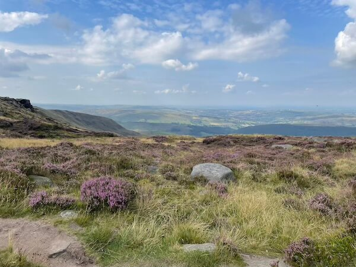

Mass Trespass
Published by Maureen Holland
Walking along Kinder Scout in 2025, it’s easy to forget that these paths weren't always open to the public.
August 26 marked the last long weekend of the UK summer and I wanted to get away. Nothing big, just a decent hike and a few nights camping. The Peak District isn’t too far from us, so I started looking up walks in the area.
Who wouldn’t be intrigued by something called the “Kinder Scout Mass Trespass Walk”?
In 1932 around 500 walkers, mostly from Manchester, trespassed en masse and walked from Hayfield to Kinder Scout to secure access rights to open country for all to enjoy forever. Today you can walk in their footsteps and enjoy the barren Dark Peak moorland landscape that others fought so hard for.
We didn’t end up doing this exact walk. The train doesn’t stop in Hayfield anymore. We went to Edale and managed a walk that overlapped the Eastern edge of the mass trespass route. It was a very popular stretch, for good reason. The views are incredible.
I often think these walks are so enjoyable because they cost nothing. But they cost so much. So much time and effort and organization and care has gone (and continues to go) into public access rights.
A hundred years ago, I would have been a trespasser. That’s something to remember.